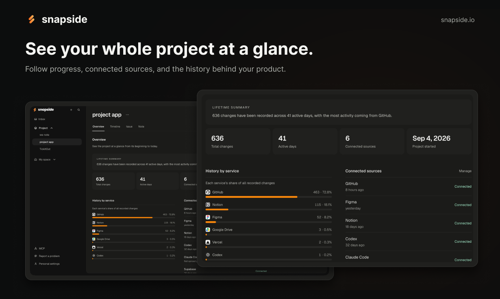
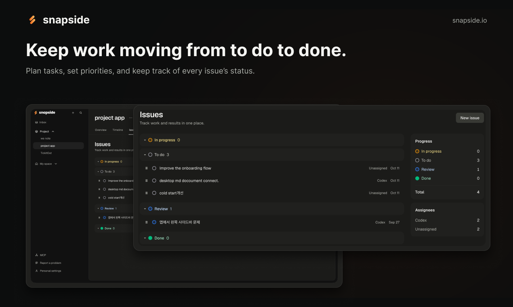
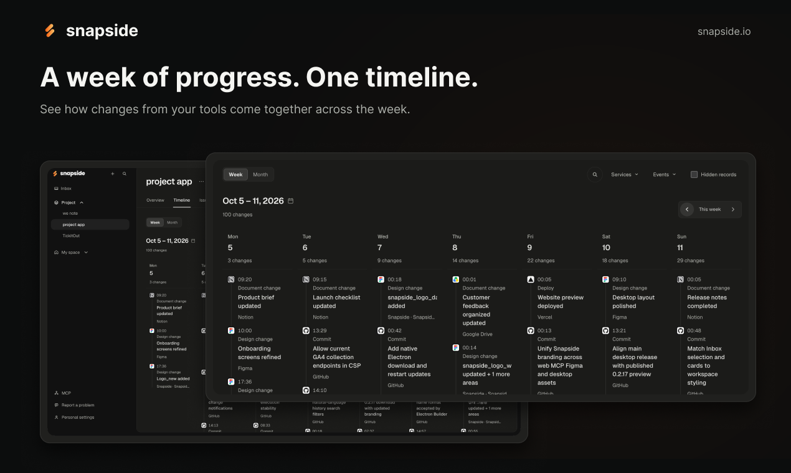

作業を進める
Notionでプロジェクトやログを管理し、Figmaで画面を変えていく。
ツールをまたぐ変更を、一つのHistoryに。

Supabase · 2026.10.18時点
GA4 · 2026.09.20–10.17
GA4のWebアクティブユーザー
登録アカウントは運営・テスト未除外。Webユーザーは訪問者の指標で、登録者数とは異なります。
出発点は、一人でバイブコーディングをしながら、作業ログを毎回手で残し続ける難しさでした。記録を忘れると、時間がたってからNotionやFigmaで「なぜこの変更をしたのか」をたどれなくなる。その経験からSnapsideを作りました。
Notionでプロジェクトやログを管理し、Figmaで画面を変えていく。
作ることに集中するほど、毎回の手動記録を忘れてしまう。
後から変更を見ても、そのときの判断や経緯を思い出しにくい。
使い慣れたツールをつなぎ、変更の流れを一か所でたどれるように。変更履歴とIssue・Noteを一緒に見返せる構造を目指しました。
 Figma
Figma Notion
Notion GitHub
GitHub Vercel
Vercelつないだツールの変更を、手でログへ転記せずに集める。
Notion・Figma・コード・リリースを時間の流れで見返す。
理由や補足はNote・Issueに残し、変更履歴と一緒に確認する。
別ページから一覧内へ。内容入力を一つにまとめ、担当者・優先度を下部に配置。

Title + Description
Content → Assignee / Priority
コード差分から再構成したフロー。実画面ではありません。
週・月を残してWorkflowを追加。初期分類はタイトル・説明・ブランチ等のルールを使用。

Records by date
Rules → Related records
コード差分から再構成したフロー。実画面ではありません。
入口をTimelineからOverviewへ変更。全体の状況を先に示す設計。
Timeline / Issue / Analytics / Note
Overview / Timeline / Issue / Note
コード差分から再構成したフロー。実画面ではありません。
SEO整備と記事発行を継続し、初期の検索露出の拡大を観測しました。
Project tracker / Product historyをページと記事へ。
多言語Metadata、canonical、hreflang、sitemap。
Search ConsoleとGA4を別々の指標として確認。
小さな初期基準からの変化です。CTRは低下しており、検索での表示からクリックへの改善は次の課題。個別施策の因果効果とは断定しません。
2026.10.18確認。GA4は9/20–10/17、Search Consoleは9/19–10/16。集計期間が1日異なるため、同じFunnelとして合算していません。
流入数だけでなく、記事への入口と、サイト内で記録された操作を分けて確認しました。
GA4 · Organic Search · 2026.09.20–10.17
26セッションを、最初に開いたページで分類。
単位：セッション。記事からの入口はFigma・Notionの作業履歴に関する多言語コンテンツが中心。
scroll / button_click / loginの集計。別々の行動指標であり、順番を追ったファネルではありません。
記事からの流入に加え、Timeline・Issue・Noteの閲覧も記録。ただし製品内の反復閲覧は一部ユーザーに集中しています。記事から製品紹介・登録への導線を整え、登録完了イベントで確認する方針です。
Session default channel group = Organic Searchで絞り込み。参加セッション20 / 26。内部・テスト利用の除外は未確認で、登録完了・有料転換の成果としては扱っていません。
実装と初期の利用・検索指標を公開。次は検索からのクリック、登録後の利用、UX変更の効果を分けて検証する。
05 / UX Decisions
3つの変更をコミットで確認。理由は設計仮説として示し、ユーザーへの効果とは区別します。
一覧 → 別の作成ページ → タイトル＋作業内容
一覧＋作成欄 → 内容入力 → 担当者・優先度
コードから再構成したフロー図。実画面の比較ではありません。
Week / Month → 日付から記録を探す
Week / Month ＋ Workflow → 関連作業をまとめる
コードから再構成したフロー図。実画面の比較ではありません。
Project → Timeline / タブ: Timeline → Issue → Analytics → Note
Project → Overview / タブ: Overview → Timeline → Issue → Note
コードから再構成したフロー図。実画面の比較ではありません。
コミットが示すのは実装の変更です。問題の存在や改善効果を証明するものではありません。GA4の数値も、この3変更の前後比較ではないため成果として結び付けていません。